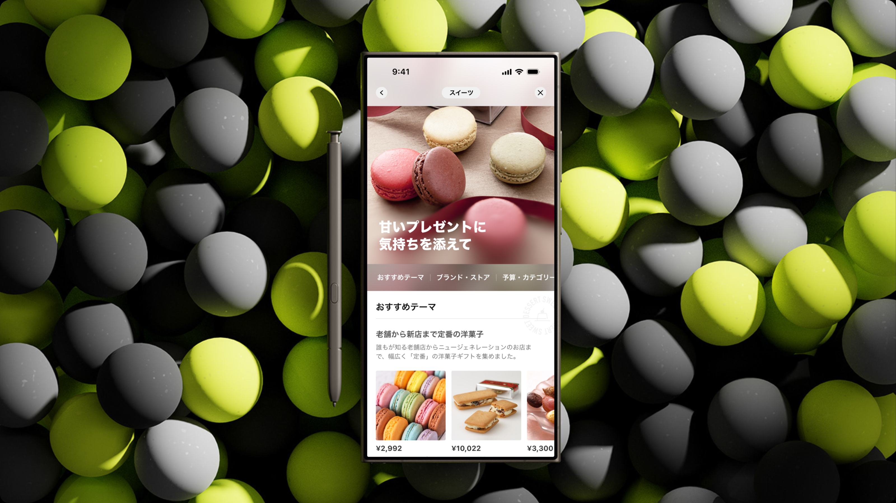
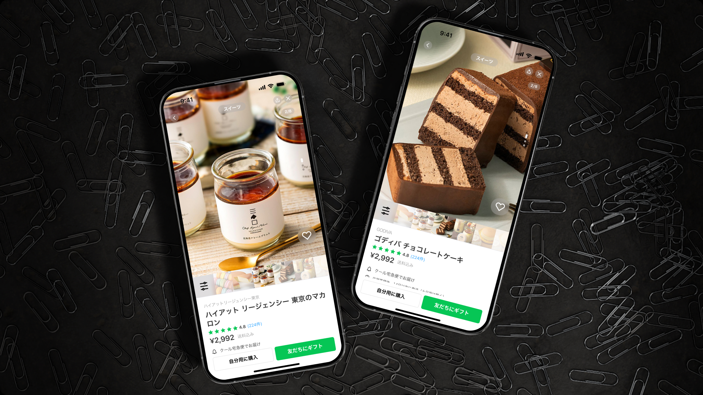

※LINEヤフー Summer Internshhip2024 課題制作
（実際にリリースされたサービス・機能ではありません）
※下記の提供を受けてアウトプット化
・LINEギフトデザインシステムからスタイルガイド
・デザインテンプレート
・アイコンデザインアセット
・カラーアセット
・コンポーネントアセット一式
・イラスト
・デザインアセット一式
ユーザーエクスペリエンスを向上させるため、詳細ページのアーキテクチャを見直し、ステップ数を減らした。
具体的には、商品詳細を表示する際、ユーザーはページを下にスクロールするだけで、関連商品や類似スタイル
をシームレスに閲覧することができる。 このデザインにより、商品ページを行ったり来たりする必要がなくなり、
より効率的で直感的なショッピング体験を提供する。


Brand Name:
Category:
Designer:
"LINE GIFT"
"UIUX"
"SU ZIYUE"